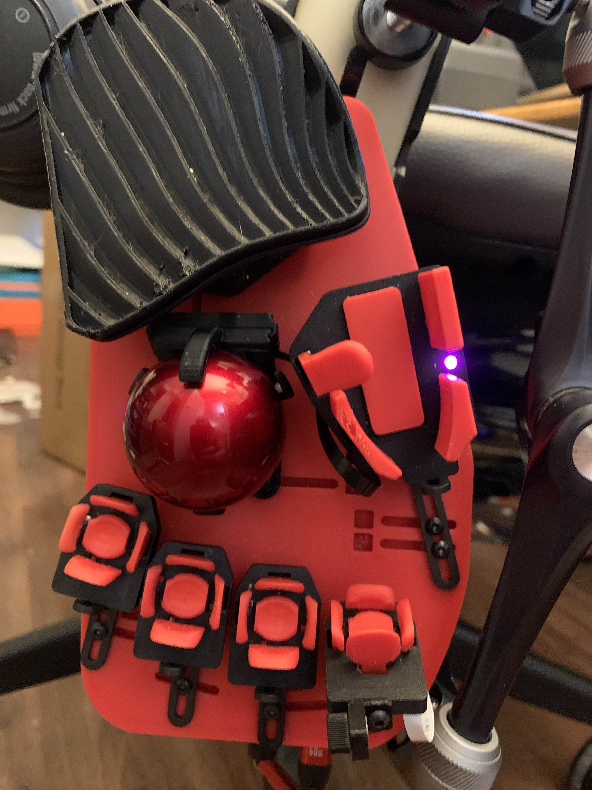

The Clinical Problem
Trigger finger (stenosing tenosynovitis) occurs when the flexor tendon sheath becomes inflamed and narrowed at the A1 pulley - the first annular pulley at the MCP joint.
Etiology
Trigger finger is not typically caused by typing. Common risk factors:
- Repetitive forceful gripping - sustained power grip (tools, instruments, steering wheels)
- Diabetes mellitus - significantly elevated risk, especially insulin-dependent
- Rheumatoid arthritis and other inflammatory joint conditions
- Hormonal factors - higher prevalence in women aged 40-60
- Gout, amyloidosis - tendon or sheath thickening
- Idiopathic - many cases have no clear cause
Anatomy
The flexor tendons (FDP and FDS) pass through annular and cruciform pulleys that hold them close to bone. The A1 pulley is the most proximal and most common stenosis site.
When the A1 pulley thickens or the tendon develops nodular swelling:
- The tendon catches passing through the constricted pulley
- The finger may lock in flexion, requiring passive extension to release
- Repeated catching drives further inflammation - a self-reinforcing cycle
Why Typing Aggravates It
Typing does not cause trigger finger, but active flexion provokes the catching. The tendon encounters resistance at the narrowed A1 pulley during return:
- Every flexion-extension cycle risks a catching episode
- Higher frequency means more pulley irritation
- Inflammation drives thickening drives more catching
Conventional typing demands exactly this: full flexion to press, full extension to release, thousands of times per hour. For someone who types for work, this prevents resolution and worsens symptoms.
Why Conventional Typing Is a Problem Once You Have It
Each keystroke requires:
- Full finger flexion - 3-4 mm travel through the full DIP/PIP arc
- Active extension - lifting back to home row
- High repetition - 60-80 WPM generates thousands of cycles per hour
The worst possible motion pattern for an inflamed A1 pulley. Each cycle drags the thickened tendon through the stenotic pulley, irritates the inflammation site, risks catching, and sustains the cycle preventing resolution.
Conventional Keyboard
- Full finger flexion for every keystroke
- Active extension to return to home row
- 3-4 mm key travel through the full flexion arc
- Thousands of full-range flexion-extension cycles per hour
- Each cycle drags the tendon through the inflamed A1 pulley
- Catching episodes interrupt typing and cause pain
Svalboard
- 1-2 mm lateral tilt movements - not full flexion
- No active extension required - finger rests in key cluster
- Finger stays in a mid-range position, never reaching full flexion
- The A1 pulley is never loaded through its provocative range
- Customizable key cluster angle can further reduce flexion demand
- Typing continues even during active trigger finger episodes
What Svalboard Changes
Svalboard eliminates the flexion-extension cycle entirely.
No Full Flexion Required
Keys activate via small lateral tilts - north, south, east, west - roughly 1-2 mm from resting position. The finger never flexes through the range where tendon catching occurs.
No Active Extension Required
On a conventional keyboard, the finger must actively extend after each keystroke. This is when catching most often occurs - the thickened tendon struggles through the narrowed pulley.
On Svalboard, the finger rests in its key cluster at all times. No "return to home row" motion. No extension against the inflamed pulley.
Custom Cluster Modifications
For acute episodes, the affected finger's key cluster can be rebuilt with a custom pitch-adjustable tower that angles the cluster to further minimize residual flexion demand.
One documented case: this modification allowed typing through a month-long episode without provoking catching.

Custom pitch-adjustable tower (upper left) angles the key cluster to minimize flexion demand on the affected finger. Standard clusters visible below for comparison.
Reduced Tendon Loading
Actuation force is approximately 20 gf (customizable to 8-10 gf) with a breakaway profile. Total mechanical work per keystroke is roughly 90% lower than a conventional switch. Less force, less tendon tension, less A1 pulley friction.
Clinical Impact
Flexion-Extension Cycles
Eliminated - lateral micro-movements replace the full flexion arc that provokes catching
A1 Pulley Loading
Near-zero tendon excursion through the A1 pulley - the primary mechanical driver is removed
Typing Continuity
Users continue working through active episodes without provoking catching or locking
Recovery Support
Removing repetitive mechanical irritation lets the inflammatory cycle resolve
Clinical summary: Trigger finger is driven by repetitive tendon excursion through a stenotic A1 pulley. Svalboard replaces full-flexion keystrokes with lateral micro-movements. The finger never enters the catching range, enabling continued typing and supporting recovery.
For Healthcare Providers
Provider Overview
Condition: Stenosing tenosynovitis (trigger finger) - ICD-10: M65.3
Structures involved:
- Flexor digitorum profundus (FDP) and superficialis (FDS) tendons
- A1 pulley (annular pulley at the MCP joint)
- Flexor tendon sheath
Key biomechanical change: Eliminates the repetitive full flexion-extension cycle. Input uses 1-2 mm lateral tilts that keep the finger out of its catching range.
Clinical use cases:
- Active episodes - continued typing without provoking catching/locking
- Post-injection - reduced mechanical provocation supports anti-inflammatory effect
- Conservative management - concrete activity modification for the highest-repetition task
- Post-surgical - reduced tendon loading after A1 pulley release
- Recurrent trigger finger - eliminating the mechanical driver may reduce recurrence
Customization note: For acute episodes, a custom pitch-adjustable tower can be built for the affected finger. Used successfully for a month-long episode without provoking catching.
Complementary interventions: Compatible with night splints, corticosteroid injections, and hand therapy. Addresses the mechanical provocation of typing without replacing clinical treatment.